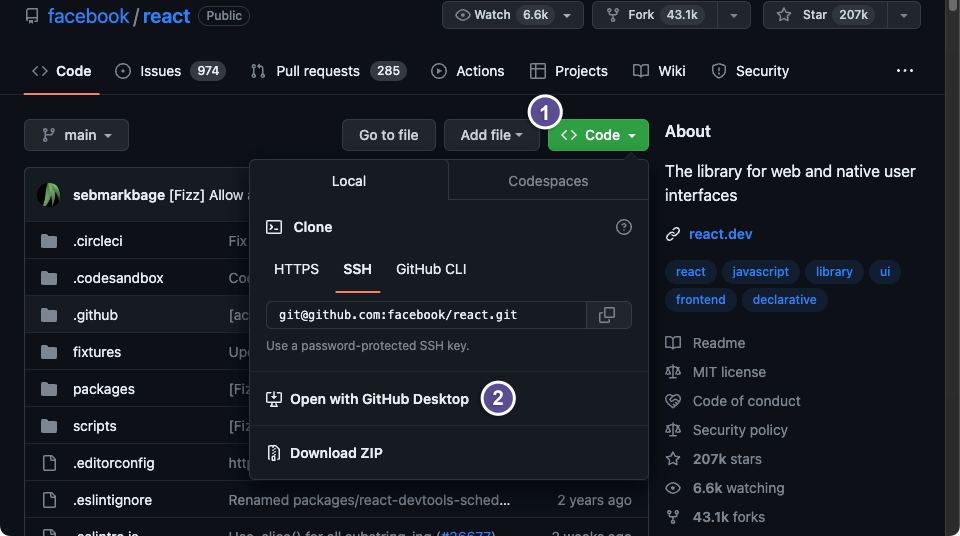

git clone <address>Week 4 Tasks
Tasks
Download a project
There are two main ways to download a project to your computer from GitHub and you should pick the one that makes sense for what you want to do:
Download a .zip package
The most straightforward method is to download a .zip file containing the latest version of the files.
Click on the green ‘Code’ button, then the ‘Download ZIP’ option. This will download a single file, archived and compressed using the common ZIP file format. Double-clicking the file will extract its contents to a folder next to the original .zip file.
An important distinction here is that you are downloading just the codebase — the files and folders of the repository — and not the Git repository itself. This means you lose some of the key functionality of Git, for example, if the project maintainers make any updates to the project, you will need to manually re-download the .zip file and extract it again to see those changes, instead of being able to easily pull these changes (more on this in the next example!).
Clone
Another way to download a project to your computer is to use Git’s clone method. To use clone, we need to tell Git installed on our computer to make a copy (or ‘clone’) of another repository, in this case from GitHub.
First, we need to copy the address of the repository we want to clone.
Click on the green button labelled “Code”
Choose either HTTPS or SSH, depending on how you connect to GitHub with Git on your computer (see the Configuration section of Unit 1)
Copy the address
Then in your terminal, navigate to your desired folder and issue the following command:
You should now see the repository has been cloned to your computer.
First, navigate to the repository you want to clone on the GitHub website.

Click on the green button labelled ‘Code’
Click on ‘Open with GitHub Desktop’
You should then see a window like this pop up in GitHub Desktop:
The URL of the repository on GitHub has automatically been populated
Choose where you would like the repository to be cloned to on your computer
Click ‘Clone’
Using this approach, we have a copy of the files and folders in the repository, but we have also copied the metadata which makes this into a Git repository. To answer the example above, now if a project maintainer makes an update to the project on GitHub, we can easily sync both versions:
In the project folder just issue the pull command:
git pullOn GitHub Desktop, click the ‘Fetch origin’ button in the top bar:

Week 4 Tasks – Week 4: Collaborative Coding 1 Week 4 Tasks – Week 4: Collaborative Coding 1 Week 4 Tasks – Week 4: Collaborative Coding 1 Week 4: Collaborative Coding 1